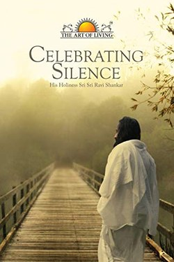

Library › Self-Improvement
Celebrating Silence — Summary & Key Lessons

The Art of Living founder on why silence is not the absence of thought but its source.
📖 OPEN THE FULL INTERACTIVE BREAKDOWN →🌐 Read it in Hindi, Hinglish, Gujarati, Tamil & 22 more languages — free, with audio.
💡 The Big Idea
Sri Sri Ravi Shankar's talks and Q&As cover the whole path in simple language: meditation as rest for the mind, breath as the anchor, doubt as friend, love as native state. His central idea is that the mind is like the sky — thoughts are clouds; the sky is always there. You are the sky, not the clouds. Silence is not emptiness; it is the space where clarity and creativity originate.
🧠 The 5 Key Lessons
Lesson 1: You Are the Sky, Not the Clouds
Talk 1: The Mind
The core image of the book: thoughts are clouds passing across the sky of awareness. You are the sky — the ever-present space — not the clouds. The practice is therefore not to fight thoughts but to disidentify: notice the storm, and watch it from the space that is never disturbed.
📖 Example: An anxious thought at 3 am is a cloud; the witness of it is the sky — the real you. Read the full example →
⚡ Do this: Whenever a strong thought appears, silently repeat: 'cloud' — and return to the sky (breath).
Lesson 2: Breath Is the Door
Talk 2: Pranayama
Sri Sri teaches breath as the most direct switch: emotions change the breath, and breath changes emotions. Angry people breathe shallow and fast; calm people breathe long and slow. Regulate the breath, and you regulate the mood — no need for a storm of analysis. The 'Sudarshan Kriya' breathing exercises are his signature; the general principle is universal.
📖 Example: Before a hard conversation, five extended breaths change your tone more than any rehearsal. Read the full example →
⚡ Do this: Twice daily: 5 minutes of slow, long breathing — and one pause before each difficult interaction.
Lesson 3: Doubt Is a Friend
Talk 3: Doubt
Unusually, the book defends doubt: blind belief is stagnation, and honest inquiry is what ripens understanding. The seeker who questions is closer to the truth than the follower who never asks. At the same time, a doubt that is never acted on becomes noise — the answer to a doubt is not more doubt, but one experiment.
📖 Example: 'Does meditation work?' — the answer is not in debate but in twice-daily practice for a month. Read the full example →
⚡ Do this: Pick one live doubt and design a one-month experiment to settle it by experience, not argument.
Lesson 4: Love Is Not an Achievement
Talk 4: Love
Sri Sri distinguishes love from attachment: love expands, attachment contracts. Love does not need to be manufactured — it is the natural state of a mind not cluttered by fear and demand. The practical instruction is disarming: drop the expectation, and the feeling returns. You cannot force love; you can only remove what blocks it.
📖 Example: Parents who 'sacrifice' with resentment communicate the resentment, not the love — the block, not the flow. Read the full example →
⚡ Do this: One interaction today with zero expectation of return — and notice what happens to your warmth.
Lesson 5: Silence Is the Source
Talk 5: Silence
The book's name is its thesis: silence is not the absence of speech but the presence of depth — the state before thought, where decisions align and creativity is born. Regular silence (meditation, or even one quiet hour) is refuelling, not idleness. The loudest ideas and the deepest answers both come from quiet.
📖 Example: Master inventors and artists describe answers arriving in showers, walks, stillness — not in the busy grind. Read the full example →
⚡ Do this: Claim one hour of silence this week — no input, no output — then bring one question into it.
✅ 5-Step Action Plan
- Label thoughts as clouds; return to the sky-breath.
- Practise 5 minutes of slow breathing twice daily.
- Convert one doubt into a one-month experiment.
- Give one zero-expectation interaction today.
- Take one silent hour weekly with a question in it.
⚠️ When This Doesn't Work
The talks are devotional, with metaphysical claims about energy and a guru-led path that not everyone needs or wants. The practices (breath, doubt, silence) work independently of the belief system.
💀 The Graveyard Proves It
📷 Howard Hughes — The Billionaire in a Darkened Room. Burn: Everything money can't buy Read the full case study →
💬 Best Quotes from Celebrating Silence
- “The quieter you become, the more you can hear.”
- “Doubt is the beginning of wisdom — it is the first step to the truth.”
- “You cannot learn to be free from someone who is not free.”
Interactive version: mark lessons as read, listen in your language, share quote cards.